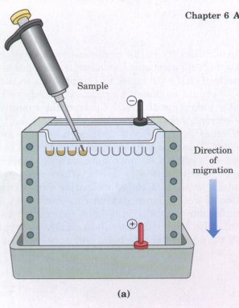
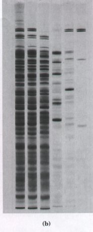
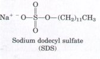
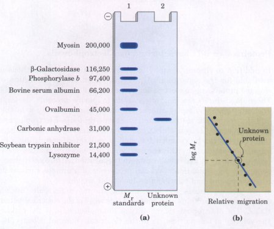
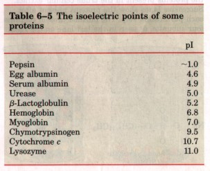
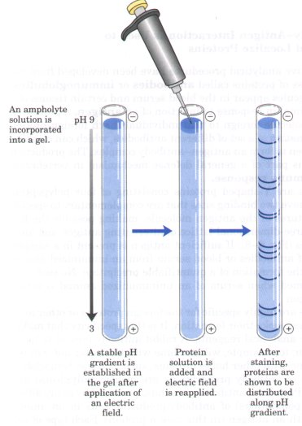
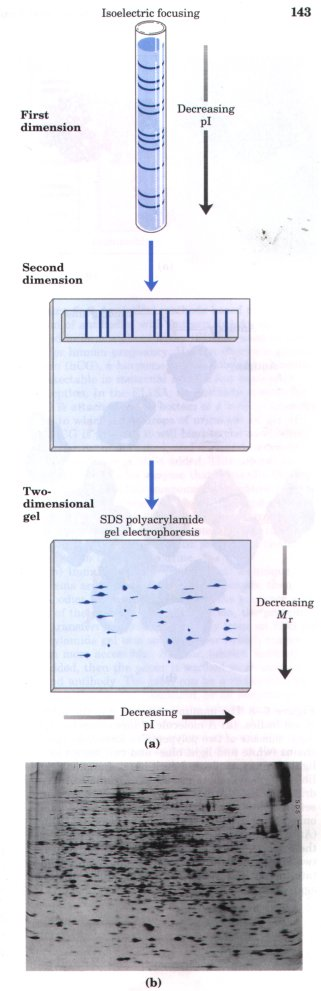
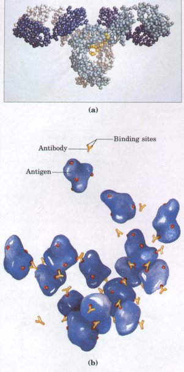
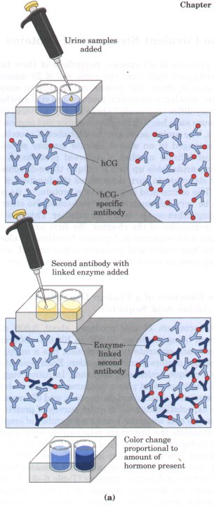
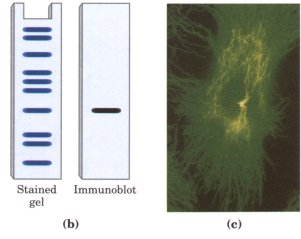

In addition to chromatography, another important set of methods is available for the separation of proteins, based on the migration of charged proteins in an electric field, a process called electrophoresis. These procedures are not often used to purify proteins in large amounts because simpler alternative methods are usually available and electrophoretic methods often inactivate proteins. Electrophoresis is, however, especially useful as an analytical method. Its advantage is that proteins can be visualized as well as separated, permitting a researcher to estimate quickly the number of proteins in a mixture or the degree of purity of a particular protein preparation. Also, electrophoresis allows determination of crucial properties of a protein such as its isoelectric point and approximate molecular weight.


Figure 6-4 Electrophoresis. (a) Different samples are loaded in wells or depressions at the top of the polyacrylamide gel. The proteins move into the gel when an electric field is applied. The gel minimizes convection currents caused by small temperature gradients, and it minimizes protein movements other than those induced by the electric field.(b) Proteins can be visualized after electrophoresis by treating the gel with a stain such as Coomassie blue, which binds to the proteins but not to the gel itself Each band on the gel represents a different protein (or protein subunit); smaller proteins are found nearer the bottom of the gel. This gel illustrates the purification of the enzyme RNA polymerase from the bacterium E. coli. The first lane shows the proteins present in the crude cellular extract. Successive lanes show the proteins present after each purification step. The purified protein contains four subunits, as seen in the last lane on the right.
In electrophoresis, the force moving the macromolecule (nucleic acids as well as proteins are separated this way) is the electrical potential, E. The electrophoretic mobility of the molecule, μ,, is the ratio of the velocity of the particle, V, to the electrical potential. Electrophoretic mobility is also equal to the net charge of the molecule, Z, divided by the frictional coefficient, ƒ. Thus:
μ = V/E = Z/ƒ
Electrophoresis of proteins is generally carried out in gels made up of the cross-linked polymer polyacrylamide (Fig. 6-4). The polyacrylamide gel acts as a molecular sieve, slowing the migration of proteins approximately in proportion to their mass, or molecular weight.

An electrophoretic method commonly used for estimation of purity and molecular weight makes use of the detergent sodium dodecyl sulfate (SDS). SDS binds to most proteins (probably by hydrophobic interactions; see Chapter 4) in amounts roughly proportional to the molecular weight of the protein, about one molecule of SDS for every two amino acid residues. The bound SDS contributes a large net negative charge, rendering the intrinsic charge of the protein insignificant.In addition, the native conformation of a protein is altered when SDS is bound, and most proteins assume a similar shape, and thus a similar ratio of charge to mass. Electrophoresis in the presence of SDS therefore separates proteins almost exclusively on the basis of mass (molecular weight), with smaller polypeptides migrating more rapidly. After electrophoresis, the proteins are visualized by adding a dye such as Coomassie blue (Fig. 6-4b) which binds to proteins but not to the gel itsel?This type of gel provides one method to monitor progress in isolating a protein, because the number of protein bands should decrease as the purification proceeds. When compared with the positions to which proteins of known molecular weight migrate in the gel, the position of an unknown protein can provide an excellent measure of its molecular weight (Fig. 6-5). If the protein has two or more different subunits, each subunit will generally be separated by the SDS treatment, and a separate band will appear for each. |
 Figure 6-5 Estimating the molecular weight of a protein. The electrophoretic mobility of a protein on an SDS polyacrylamide gel is related to its molecular weight, Mr(a) Standard proteins of known molecular weight are subjected to electrophoresis (lane 1). These marker proteins can be used to estimate the Mr of an unknown protein (lane 2). (b) A plot of log Mr of the marker proteins versus relative migration during electrophoresis allows the Mr of the unknown protein to be read from the graph. |
Isoelectric focusing is a procedure used to determine the isoelectric point (pI) of a protein (Fig. 6-6). A pH gradient is established by allowing a mixture of low molecular weight organic acids and bases (ampholytes; see p. 118) to distribute themselves in an electric field generated across the gel. When a protein mixture is applied, each protein migrates until it reaches the pH that matches its pI. Proteins with different isoelectric points are thus distributed differently throughout the gel (Table 6-5). |
 |
Combining these two electrophoretic methods in two-dimensional gels permits the resolution of complex mixtures of proteins (Fig. 6-7). This is a more sensitive analytical method than either isoelectric focusing or SDS electrophoresis alone. Two-dimensional electrophoresis separates proteins of identical molecular weight that differ in pI, or proteins with similar pI values but different molecular weights.
 Figure 6-6 Isoelectric focusing. This technique separates proteins according to their isoelectric points. A stable pH gradient is established in the gel by the addition of appropriate ampholytes. A protein mixture is placed in a well on the gel. With an applied electric field, proteins enter the gel and migrate until each reaches a pH equivalent to its pI. Remember that the net charge of a protein is zero when pH = pI.
Figure 6-7 Two-dimensional electrophoresis. |
 |
| Several sensitive analytical procedures
have been developed from the study of a class of proteins
called antibodies or immunoglobulins, Antibody molecules
appear in the blood serum and certain tissues of a
vertebrate animal in response to injection of an antigen,
a protein or other macromolecule foreign to that
individual. Each foreign protein elicits the formation of
a set of different antibodies, which can combine with the
antigen to form an antigen-antibody complex. The
production of antibodies is part of a general defense
mechanism in vertebrates called the immune
response. Antibodies are Y-shaped proteins consisting of four polypeptide chains. They have two binding sites that are complementary to specific structural features of the antigen molecule, making possible the formation of a three-dimensional lattice of alternating antigen and antibody molecules (Fig. 6-8). If sufficient antigen is present in a sample, the addition of antibodies or blood serum from an immunized animal will result in the formation of a quantifiable precipitate. No such precipitate is formed when serum of an unimmunized animal is mixed with the antigen. Antibodies are highly specific for the foreign proteins or other macromolecules that evoke their formation. It is this specificity that makes them valuable analytical reagents. A rabbit antibody formed to horse serum albumin, for example, will combine with the latter but will not usually combine with other horse proteins, such as horse hemoglobin. Two types of antibody preparations are in use: polyclonal and monoclonal. Polyclonal antibodies are those produced by many different types (or populations) of antibody-producing cells in an animal immunized with an antigen (in this case a protein). Each type of cell produces an antibody that binds only to a specific, small part of the antigen protein. Consequently, polyclonal preparations contain a mixture of antibodies that recognize different parts of the protein. Monoclonal antibodies, in contrast, are synthesized by a population of identical cells (a clone) grown in cell culture. These antibodies are homogeneous, all recognizing the same specific part of the protein. The techniques for producing monoclonal antibodies were worked out by Georges Kohler and Cesar Milstein. |
 Figure 6-8 The immune response and the action of antibodies. (a) A molecule of immunoglobulin G (IgG> consists of two polypeptides known as heavy chains (white and light blue) and two known as light chains (purple and dark blue). Immunoglobulins are glycoproteins and contain bound carbohydrate (yellow). (b) Each antigen evokes a specific set of antibodies, which will recognize and combine only with that antigen or closely related molecules. (Antibody-binding sites are shown as red areas on the antigen.) The Y-shaped antibodies each have two binding sites for the antigen, and can precipitate the antigen by forming an insoluble, latticelike aggregate. |
Antibodies are so exquisitely specific that they can in some cases distinguish between two proteins differing by only a single amino acid.When a mixture of proteins is added to a chromatography column in which the antibody is covalently attached to a resin, the antibody will specifically bind its target protein and retain it on the column while other proteins are washed through. The target protein can then be eluted from the resin by a salt solution or some other agent. This can be a powerful tool for protein purification.
A variety of other analytical techniques rely on antibodies. In each case the antibody is attached to a radioactive label or some other reagent to make it easy to detect. The antibody binds the target protein, and the label reveals its presence in a solution or its location in a gel or even a living cell. Several variations of this procedure are illustrated in Figure 6-9. We shall examine some other aspects of antibodies in chapters to follow; they are of extreme importance in medicine and also tell much about the structure of proteins and the action of genes.
  |
Figure
6-9 Analytical methods based
on the interaction of antibodies with antigen. |